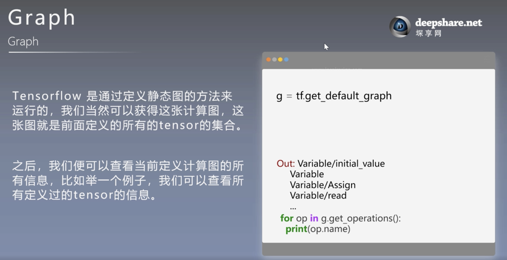
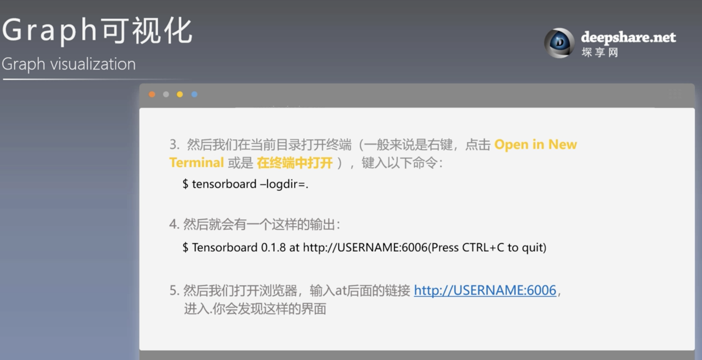
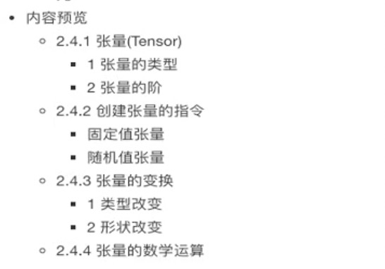
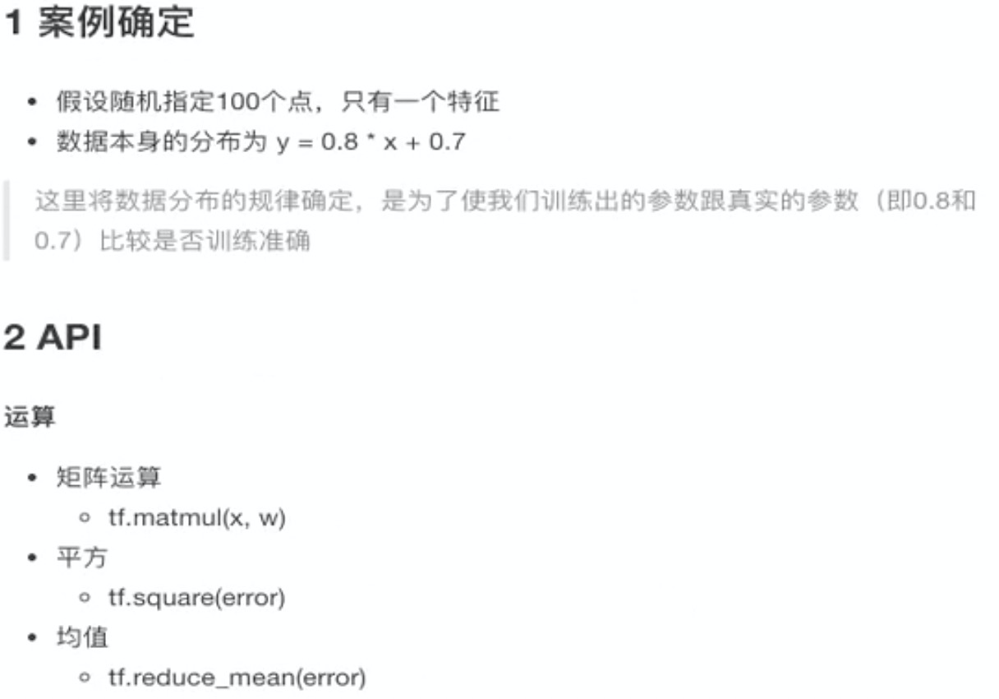

基础
安装环境
带gpu运算版本：
1 | C:\Users\Administrator>cd C:\Program Files\NVIDIA Corporation\NVSMI |
其它安装方法:
conda环境使用基本命令：
1 | conda update -n base conda //update最新版本的conda |
查看tensorflow各个版本：（查看会发现有一大堆TensorFlow源，但是不能随便选，选择可以用查找命令定位）
1 | anaconda search -t conda tensorflow |
找到自己安装环境对应的最新TensorFlow后（可以在终端搜索anaconda，定位到那一行），然后查看指定包
1 | anaconda show <USER/PACKAGE> |
查看tensorflow版本信息
1 | anaconda show anaconda/tensorflow |
第4步会提供一个下载地址，使用下面命令就可安装1.8.0版本tensorflow
1 | conda install --channel https://conda.anaconda.org/anaconda tensorflow=1.8.0 |
更新，卸载安装包：
1 | conda list #查看已经安装的文件包 |
删除虚拟环境
1 | conda remove -n xxxx --all //创建xxxx虚拟环境 |
清理（conda瘦身）
conda clean就可以轻松搞定！第一步：通过conda clean -p来删除一些没用的包，这个命令会检查哪些包没有在包缓存中被硬依赖到其他地方，并删除它们。第二步：通过conda clean -t可以将conda保存下来的tar包。
1 | conda clean -p //删除没有用的包 |
基础操作
构造图，执行图，数据转化，变化等
1 | #coding:utf8 |
占位符

1 | #coding:utf8 |
Graph


神经网络
深度学习框架
1 | pip install tensorflow==1.8 -i http://mirrors.aliyun.com/pypi/simple |
tensorflow特点
tensorflow结构
1 | import tensorflow as tf |
tensorflow结构分析
一个构造图阶段：
流程图：定义数据和操作
一个执行图阶段：
调用各方资源，将定义好的数据和操作执行起来
数据流图分析
tensor - 张量 - 数据
flow - 流动
图与TensorBoard
查看默认图的方法,tensorflow默认会创建一个图：
调用方法( tf.get_default_graph() )
查看属性( op, sess都有图属性 )
创建图的方法：
1 | new_g = tf.Graph() |
TensorBoard可视化:
1.数据序列化-events文件
tf.summary.FileWriter(path, graph=sess.graph)
2.启动tensorboard
tensorboard –logdir=”path”
Operation介绍
会话
张量

张量就是tensor, 有点像ndarray
ndarray和tensor类型修改方式:
变量
自实现线性回归

1.8的版本:
1 | # tensorflow 1.8.0的版本 |
2.0的版本：
1 | # tensorflow 2.0.0的版本 |
增加变量显示
增加命名空间
保存和加载模型
文件通用读取流程
数据io操作,三种方式：
占位符&free_dict搭配使用
QueueRunner
通用文件读取流程（图片和二进制数据，TFRecords）